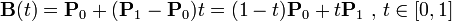

K 次贝塞尔插值算法需要 k+1 个控制点，最简单的一次贝塞尔插值就是线性插值，将时间表示为 0 到 1 的区间，一次贝塞尔插值公式是：
“二次贝塞尔插值”有 3 个控制点，相当于对 P0 和 P1，P1 和 P2 分别做贝塞尔插值，再对结果做一次贝塞尔插值计算

“三次贝塞尔插值”则是“两次‘二次贝塞尔插值’的结果，再做一次贝塞尔插值”：

贝塞尔曲线的定义中带有一个参数 t，但是这个 t 并非真正的时间，实际上贝塞尔曲线的一个点 (x, y)，这里的 x 轴才代表时间。
这就造成了一个问题，如果我们使用贝塞尔曲线的直接定义，是没办法直接根据时间来计算出数值的，因此，浏览器中一般都采用了数值算法，其中公认最有效的是牛顿积分